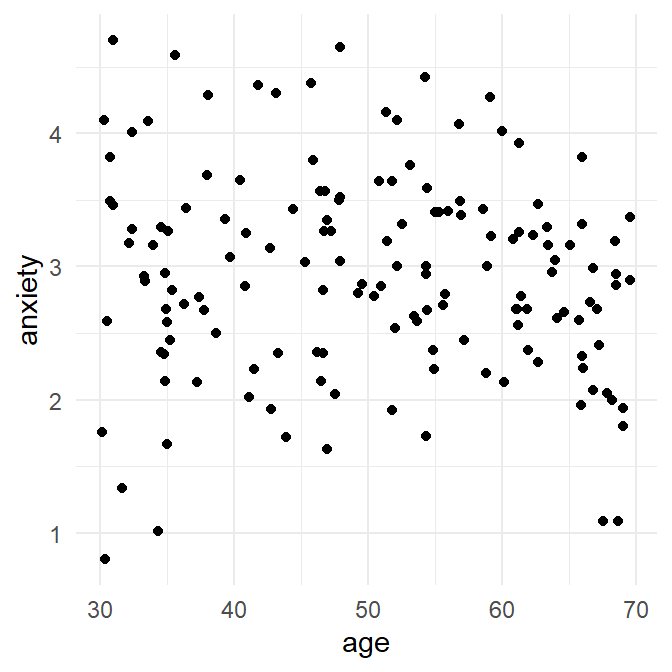

Exercise
Now you try incorporating polynomials to a regression, and do so by investigating the relationshipp between age and anxiety in SurveyData.
Does age predict anxiety, and are there ?
The column anxiety in SurveyData contains responses to the question:
“Overall, how anxious did you feel yesterday? Where 0 is ‘not at all anxious’ and 10 is ‘completely anxious’.”
- Create a scatterplot of
agevs.anxiety. Does there appear to be a linear or non-linear relationship?

A slight bow is evident is evident in the plot such that age and anxiety seem to follow an inverted U-shaped relationship.
Reported anxiety levels increase from 30 years to middle age (approx. 50 years) and then declines from 50 to 70 years. This mirrors the relationship with age and happiness: anxiety is greatest when happiness seems lowest.
Answer the following questions:
- What percentage of the variance in
anxietyis explained by a model withageas predictor? %
What percentage of the variance in
anxietyis explained by a model containing both linear and quadratic components ofageas predictors? %What is the increase in \(R^2\) if a quadratic component of
ageis added to the model? %Does this increase represent a statistically significant increase?
What is the F-statistic for the test of the model with a linear component vs. linear + quadratic components? F(1, 147) = , p = .009
What percentage of the variance in
anxietyis explained by a model containing both linear, quadratic and cubic components ofageas predictors? %What is the increase in \(R^2\) if a cubic component of
ageis added to the model? %Does this increase represent a statistically significant increase?
What is the F-statistic for the test of the model with a linear component vs. linear + quadratic components? F(1, 146) = , p =
- On the basis of the model comparison with ANOVA, which model should be preferred?
# fit a linear model, show results
anx1 <- lm(anxiety ~ age, data = SurveyData)
summary(anx1)
# fit a quadratic component, show results
anx2 <- lm(anxiety ~ poly(age,2), data=SurveyData)
summary(anx2)
# compare linear and linear+quadratic models
anova(anx1, anx2)
# fit a cubic component
anx3 <- lm(anxiety ~ poly(age,3), data=SurveyData)
summary(anx3)
# compare (linear + quadratic) and (linear + quadratic + cubic) models
anova(anx2, anx3)Now compare models with Bayes Factors:
(Note: you do not need to re-add the quadratic and cubic components of age to SurveyData - these should still be in SurveyData if you followed the steps before.)
The Bayes Factor comparing a model with linear and quadratic components vs. linear component only is
This indicates that there is more evidence for which model?
- The Bayes Factor comparing a model with linear, quadratic and cubic components vs. linear and quadratic components only is
- This indicates that there is more evidence for which model?
Do the comparisons of models with Bayes Factors support the conclusions made with anova?
library(BayesFactor)
# BF for model anx1
anx1BF <- lmBF(anxiety ~ age, data = as.data.frame(SurveyData) )
# BF for model anx2
anx2BF <- lmBF(anxiety ~ age + age2, data = as.data.frame(SurveyData) )
# compare BFs for anx2 and anx1
anx2BF / anx1BF
> Bayes factor analysis
> --------------
> [1] age + age2 : 5.476443 ±0%
>
> Against denominator:
> anxiety ~ age
> ---
> Bayes factor type: BFlinearModel, JZS
# BF for model anx3
anx3BF <- lmBF(anxiety~ age + age2 + age3, data = as.data.frame(SurveyData) )
# compare BFs for anx3 and anx2
anx3BF / anx2BF
> Bayes factor analysis
> --------------
> [1] age + age2 + age3 : 0.7556007 ±0%
>
> Against denominator:
> anxiety ~ age + age2
> ---
> Bayes factor type: BFlinearModel, JZS